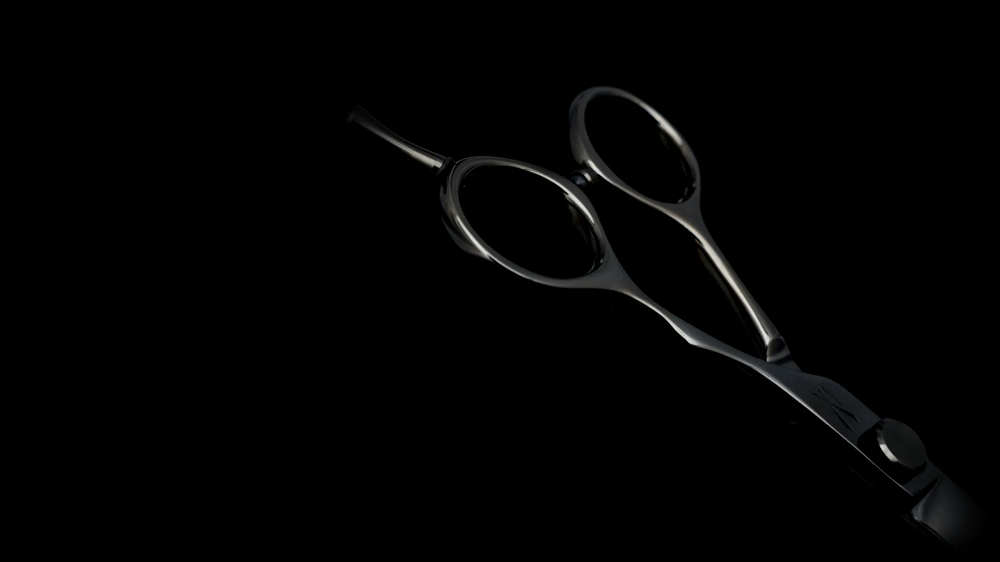
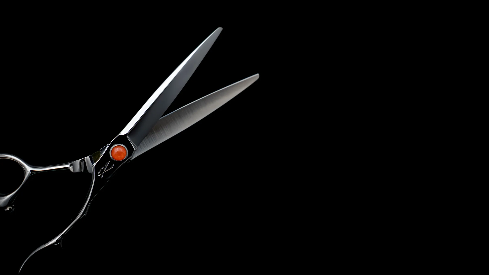
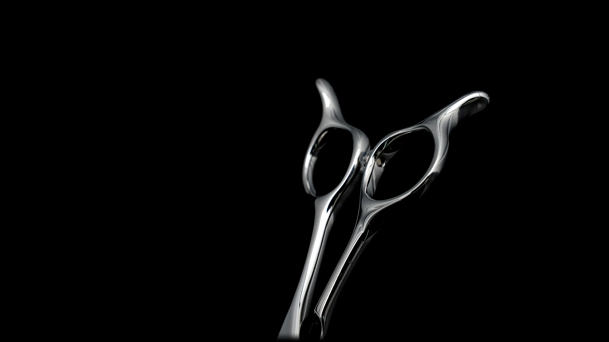
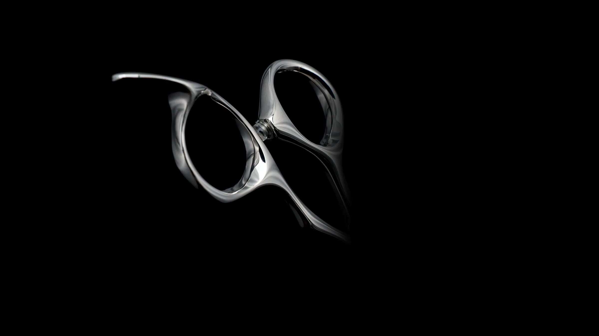

milli peak
拿掉多餘 剛好順手
less, but sharper.nothing extra. just right in hand.
閱讀品牌故事 story

MP–100S
為細節而生，緻經典
born for detail.
view →

MP–101S
一把，什麼都能做
one pair, does it all.

MP–103S
讓頭髮通透，不留痕跡
airy hair, no trace left.

MP–102S
創造髮束、降低毛躁
defined sections, less frizz.